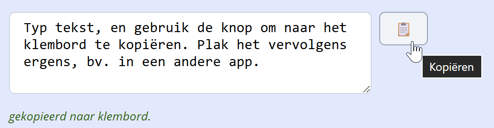
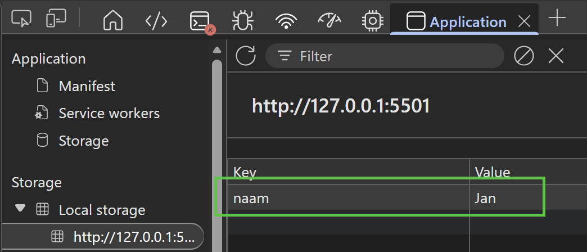
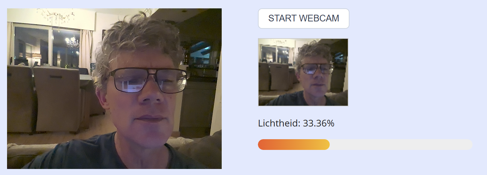

Hoe los je dit oefenblad op?
- Open de oefeningenfolder in VS Code.
- Open deze pagina in de browser (via live view of direct).
- Open de console van de developer tools.
- Elke oefening begint met theorie en een opdracht.
- Vul het overeenkomende stukje code in js/scripts.js aan.
- De bijhorende HTML-fragmenten staan onder elke opgave met een lichtblauwe achtergrond.
Overzicht van de oefeningen:
clipboard
Doel: gebruik van de Clipboard API om tekst naar het klembord te kopiëren.
Theorie
Met navigator.clipboard.writeText(tekst) schrijft een string naar het klembord.
Codevoorbeeld:
// async: "bevat een asynchrone instructie"
async function handleBtnCopyClick() {
console.log('kopiëren naar klembord...');
await navigator.clipboard.writeText(txtTekst.value); // await: "wacht tot asynchrone instructie is voltooid"
console.log('...gekopieerd!');
}
// event handler koppelen
btnCopy.addEventListener('click', handleBtnCopyClick);
async en await komen uitgebreid aan bod in volgend deel, web API's;
voorlopig houden we het bij volgende sterk vereenvoudigde uitleg:
-
sommige JavaScript statements zijn asynchroon, d.w.z. het is onduidelijk wanneer (en of) ze klaar zijn met uitvoeren
voorbeelden: netwerk requests, databank queries, geolocation opvragen, webcam toegang, clipboard gebruiken... awaitbetekent: wacht op het resultaat voor je verdergaat met de rest van de codeasyncbetekent: deze functie is asynchroon (of bevat een asynchrone statement, waardoor het zelf ook automatisch asynchroon is)
let op: de Clipboard API vereist zoals veel Javascript API's eerst een interactie met de gebruiker (hier: een klik op de knop).
Opdracht
Probeer het uit:
- bij klik op de copy-knop moet de tekst uit de textarea naar het klembord gekopieerd worden.
- toon ook onderaan de tekst "gekopieerd naar klembord".

HTML-fragment
localStorage
Doel: een tekst bewaren in de browser en weer ophalen met localStorage.
Theorie
Met localStorage kan je gegevens (enkel strings) in de browser bewarenop (per domein).
De data blijft bewaard tot de gebruiker die wist. Je gebruikt een sleutel (string) en een waarde (string).
const ITEM_KEY = 'naam';
localStorage.setItem(ITEM_KEY, 'Jan'); // opslaan
const waarde = localStorage.getItem(ITEM_KEY); // ophalen (of null)
localStorage.removeItem(ITEM_KEY); // verwijderenJe kan de bewaarde keys altijd terugvinden in de browser developer tools onder Application:

Opdracht
Bij klik op Opslaan: bewaar de tekst uit het invoerveld in localStorage onder de sleutel spelernaam. Bij klik op Laden: haal die waarde op en toon ze in het invoerveld. Bij het laden van de pagina: als er al een waarde voor spelernaam staat, vul dan het invoerveld.
HTML-fragment
localStorage met JSON
Doel: complexe objecten bewaren in localStorage door het om te zetten naar en van JSON met JSON.stringify() en JSON.parse()
Theorie
Je kan met localStorage alleen strings bewaren.
Om een object op te slaan zetten we het om naar een gestructureerde string met JSON.stringify();
bij het ophalen zetten we de string weer om naar een object met JSON.parse(). Codevoorbeeld:
const items = ['a', 'b', 'c'];
localStorage.setItem('lijst', JSON.stringify(items));
const opgeslagen = localStorage.getItem('lijst');
const weer = JSON.parse(opgeslagen); // ['a', 'b', 'c']Opdracht
We maken een eenvoudige todo lijst waar je items kan toevoegen en verwijderen.
- declaraties: maak constanten voor het invoerveld, de lijst, de sleutel voor localStorage
-
taak toevoegen aan de lijst:
- koppel een
keydownevent handler aan het invoerveld - als de gebruiker op
Enterdrukt, voeg de nieuwe taak toe aan de lijst, en wis het veld - bewaar tenslotte de lijst in localStorage met de functie
saveLijst()(zie hieronder)
- koppel een
-
functie
saveLijst():- haal alle
li-elementen uit de lijst op - zet de lijst om naar een array van teksten met
map() - zet de array om naar een string met
JSON.stringify() - sla de string op in localStorage
- haal alle
-
verwijderen van een taak:
- koppel een
clickevent handler aan de hele lijst - gebruik
e.targetom geklikte element te vinden - controleer eerst met
e.target.tagNameof het geklikte element eenLIis - verwijder het item met
remove() - bewaar tenslotte de lijst in localStorage met de functie
saveLijst()
- koppel een
-
schrijf een functie
loadLijst()die de lijst laadt bij het laden van de pagina:- vraag de data op uit localStorage met
localStorage.getItem() - zet de string weer om naar een array met
JSON.parse() - bouw de lijst op met
innerHTML - roep de functie
loadLijst()aan onderaan je code
- vraag de data op uit localStorage met
HTML-fragment
De takenlijst wordt automatisch bewaard. Voeg een taak toe met het tekstveld. Klik op een taak om te verwijderen.
- boodschappen doen
- huiswerk maken
- meme bellen
webcam en canvas
Doel: de webcam starten, het live beeld tonen en op een knop een foto nemen door het huidige frame naar een canvas te tekenen.
Theorie
Bestudeer het Photobooth voorbeeld uit de theorie.
Opdracht
We maken een applicatie waarbij je de webcam kan starten, een snapshot nemen en de lichtheid in % weeregegeven wordt. Daarbij maken we gebruik van het minder gekende progress HTML element. Stap voor stap:
Deel 1: periodiek nemen van een snapshot
- Vertrek van de Photobooth demo uit de theorie. Pas de code zo aan dat er slechts één snapshot kan genomen worden, en gooi heel het filtergedeelte eruit (zowel in de HTML, CSS en Javascript)
-
Pas de code aan zodat de webcam niet automatisch gestart wordt, maar via de knop. De snapshot wordt automatisch elke seconde genomen; gebruik daarvoor
setInterval(), zie online cursus. Schematisch:
function takeSnapshot(e) {
...
}
async function handleBtnStartWebcamClick() {
...
setInterval(takeSnapshot, 1000); // elke seconde een snapshot
}
// events koppelen
btnStartWebcam.addEventListener('click', handleBtnStartWebcamClick);
Deel 2: tonen van de lichtheid
-
Breid de functie
takeSnapshot()uit zodat de waarde van de progress bar en de tekst met percentage worden bijgewerkt. Gebruik deze functie om de lichtheid van eencanvaste berekenen (en probeer de code ook te begrijpen):
function getLightnessFromCanvas(cnv) {
const context = cnv.getContext('2d');
const imageData = context.getImageData(0, 0, canvas.width, canvas.height);
const data = imageData.data;
let sumLightness = 0;
const pixelCount = data.length / 4;
for (let i = 0; i < data.length; i += 4) {
const r = data[i];
const g = data[i + 1];
const b = data[i + 2];
const lightness = (r + g + b) / 3;
sumLightness += lightness;
}
const avgLightness = sumLightness / pixelCount; // 0–255
const lightnessPercent = (avgLightness / 255 * 100).toFixed(2); // 0–100%
return lightnessPercent;
}
Screenshot:

tip: gebruik de lamp van je smartphone als lichtbron om te testen
HTML-fragment
web speech
Doel: tekst laten voorlezen met de Web Speech API (spraaksynthese).
Theorie
speechSynthesis.speak(utterance) leest een SpeechSynthesisUtterance voor. Je stelt de text van dat object in en kunt opties zoals lang (taal) en rate (snelheid) zetten.
const u = new SpeechSynthesisUtterance('Hallo, dit is een test.');
u.lang = 'nl-BE';
speechSynthesis.speak(u);Niet alle browsers ondersteunen alle talen. Gebruik speechSynthesis.getVoices() om beschikbare stemmen te zien.
Opdracht
Bij klik op de knop: haal de tekst uit het invoerveld, maak een SpeechSynthesisUtterance, stel de taal in op nl-BE en roep speechSynthesis.speak(...) aan.
HTML-fragment
requestAnimationFrame
Doel: een vloeiende animatie maken met requestAnimationFrame.
Theorie
Met requestAnimationFrame(callback) geef je de browser de instructie de volgende uitvoering van de functie callback() te plannen; normaal is dat na zo'n 16ms, dus 60 keer per seconde.
In die callback pas je dan aan wat elke frame aangepast moet worden. Schematisch voorbeeld voor een blokje dat van links naar rechts beweegt:
let animating = true; // hiermee kan je de animatie starten/stoppen
let xPosition = 0; // x-positie van het blokje
// callback functie
function doNextFrame() {
if (animating) {
// schuif 1px naar rechts
xPosition += 1;
blokje.style.left = xPosition + 'px';
}
// plan volgende frame over 1/60 seconde
requestAnimationFrame(doNextFrame);
}
// start de animatie
doNextFrame();
Gebruik nooit setInterval voor animaties; requestAnimationFrame gebruikt een dynamisch aantal FPS (Frames Per Second)
om de animatie vloeiend te laten lopen.
Opdracht
-
Bij druk op de Start-knop:
- start de animatie van het blokje van links naar rechts
- verander de tekst van de knop naar "Stop"
-
Bij druk op de Stop-knop:
- stop de animatie van het blokje
- verander de tekst van de knop naar "Start"
- Als het blokje de rechterkant bereikt, plaats je het blokje terug links en stop je de animatie
- Extra uitdaging: voeg een slider toe (type
<input type="range">) waarmee je de snelheid van de animatie kunt instellen.
HTML-fragment